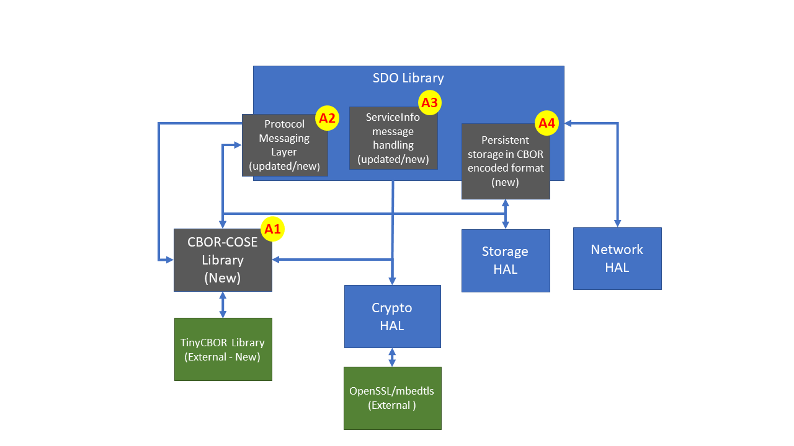
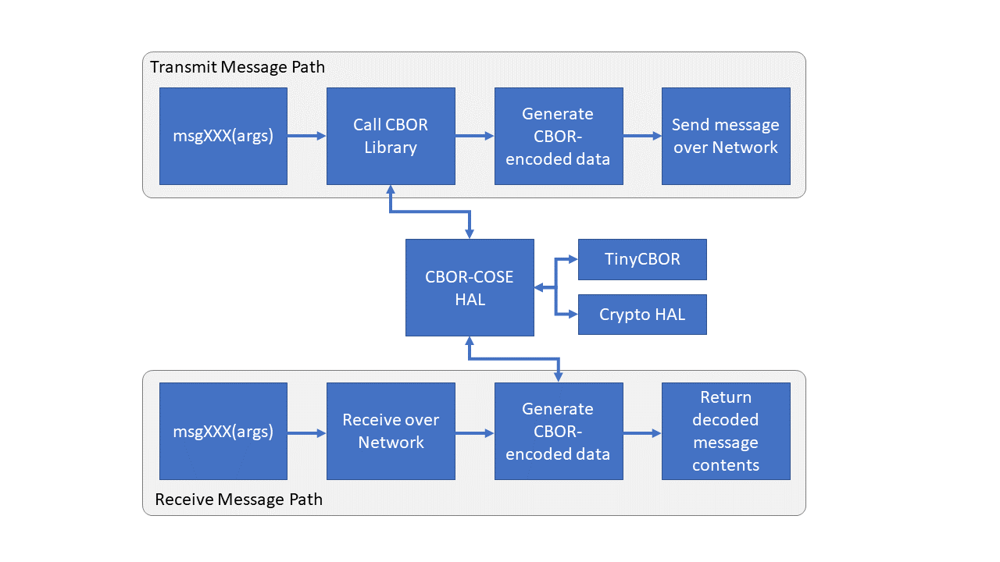
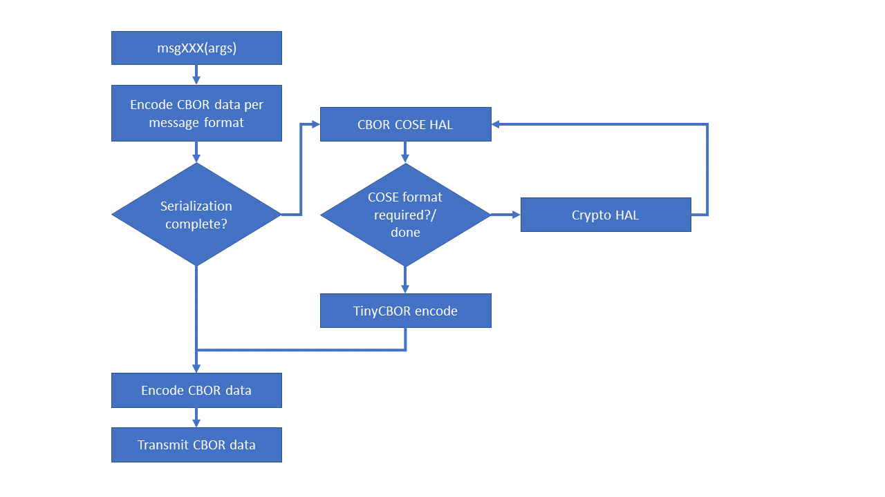

FIDOIOT Client Design
Introduction¶
This document describes the changes required in the Secure Device Onboard Client Software Development Kit (SDK) to support the new FIDO IOT draft specification.
The SDO Client SDK is a portable C Code implementation of the Secure Device Onboarding (SDO) protocols, cryptographic operations, and associated functions required to support microcontroller (MCU) devices. The SDK is written in C since it is the language of choice for programming MCU devices. While the SDK is developed and tested on Linux, the core components of the SDK are isolated from Linux specifics via an abstraction layer. Well-known open source implementations of cryptographic libraries are used for crypto operations.
The reader is expected to be familiar with MCUs in general – their SW & HW characteristics, how they are used, typical applications, their lifecycle, etc.
FIDOIOT Design¶
The design is divided into different blocks of FIDOIOT-specific implementation. This document does not specify API-level design, but rather specifies the block-level and call-level design of the FIDOIOT design. The existing REST/JSON based protocols currently implemented in the Client SDK are replaced by the CBOR-based protocols described in the FIOD IOT draft specification. Please refer to the FIDO IOT draft specification for complete details of the new draft protocols.
Figure 1. Basic Block Diagram 
Changes to be Made in Client SDK¶
There are a few blocks and implementations to be either fully rewritten or modified to make the Client SDK compatible with the FIDO IOT draft specification. Those changes are described in the following sections:
CBOR – COSE HAL Library (A1)¶
This block implements the following functionality:
- CBOR Encode API – Uses the TinyCBOR library calls directly to encode data provided from upper layer to create CBOR data stream. Data is provided back to SDO library to be sent using network layer.
- CBOR Decode API – Uses TinyCBOR library calls directly to decode received CBOR encoded data from servers. Library calls may be used recursively.
- CBOR COSE APIs – Implements the COSE API requirement using the Crypto HAL API calls as well as using TinyCBOR APIs calls. Refer to the FIDO IOT draft specification for further details on API requirements.
Documentation for the TinyCBOR library can be found here.
Source code for the TinyCBOR library can be found here.
Protocol Message Layer (A2)¶
This layer must be adapted to the new FIDO IOT implementation. Each message API must be revisited and re-implemented as required to comply with the FIDO IOT message structure. This layer will extensively use CBOR-COSE HAL layer.
ServiceInfo Message Handling (A3)¶
The FIDO IOT draft specification requires changes to the handling of ServiceInfo messages. Handling of service info is done almost similar to previous specification; however, the repeat transmit, acknowledgement, and DSI messages require full implementation in the SDO library. Unlike the current implementation, service message must be part of the SDO library rather than a separate module.
Storage Implementation - CBOR Format (A4)¶
Currently, all manufacturer information and device secrets are stored in persistent storage in JSON format. The new FIDO IOT draft specification uses CBOR as the data encoding format, and so all data stored in persistent storage must be done using CBOR encoding. This will reduce confusion and discourage the user from using multiple data storage formats.
All file save and load APIs must be rewritten using CBOR-COSE APIs to replace JSON encoding and decoding.
Fido Message Handling¶
The following is the detailed design for handling FIDO CBOR messages in the Client SDK implementation.
Figure 2. FIDO IOT Message Handling 
- CBOR–COSE HAL API Library will be used to decode and encode messages.
- Crypto HAL calls will be reutilized. If additional Crypto HAL APIs are required by CDDL they can be added as part of Crypto HAL layers.
Figure 3. FIDO IOT Transmit Message Flowchart 
Figure 4. FIDO IOT Receive Message Flowchart
Further Client SDK porting details can be found here.